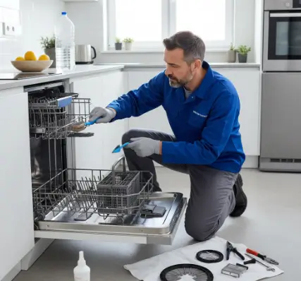

حلول سريعة لمشاكل الثلاجة وغسالة الصحون والغسالات
أشهر المشكلات التي قد تواجهك في الأجهزة المنزلية، وما يمكنك فحصه بشكل أولي قبل طلب الصيانة المتخصصة.
بتواجه أحيانًا مشكلة مفاجئة في أجهزتك المنزلية؟ من الثلاجة التي لا تبرد بالشكل المعتاد، إلى غسالة الأطباق التي لا تنظف جيدًا، أو الغسالة التي لا تسحب المياه؛ كثير من الأعطال تبدأ بأعراض بسيطة ويمكن التعامل معها بعد معرفة السبب.
في هذا الدليل نستعرض مجموعة من المشكلات الشائعة في الثلاجات وغسالات الأطباق والغسالات، مع خطوات أولية آمنة يمكنك فحصها قبل طلب الفني. وإذا استمرت المشكلة أو كانت مرتبطة بأجزاء كهربائية أو ميكانيكية، فمن الأفضل الاستعانة بمتخصص.
جهازك مش شغال زي الأول؟
تواصل مع التوكيل للصيانة للاستفسار عن العطل وطلب الفحص المناسب. الخدمة متاحة من خلال زيارة فني إلى المنزل، كما يمكنك زيارة مقر الشركة حسب طبيعة الجهاز.
أشهر أعطال الثلاجات وكيفية التعامل معها
قد تبدو بعض مشكلات الثلاجة معقدة، لكن هناك فحوصات أولية بسيطة يمكن إجراؤها. إذا لاحظت ضعف التبريد، ابدأ بالتأكد من نظافة منطقة المكثف ووجود تهوية مناسبة حول الجهاز، ثم راجع إعدادات درجة الحرارة.
أما تسرب المياه أسفل الثلاجة فقد يرتبط بانسداد مسار التصريف أو مشكلة في تجميع المياه. كذلك قد تنتج بعض الأصوات غير المعتادة عن عدم استواء الجهاز أو احتكاك أحد المكونات. إذا استمرت المشكلة، لا تحاول فك الدائرة الداخلية بنفسك.
دليلك للتعامل مع تسريب المياه من غسالة الأطباق
تسريب المياه من غسالة الأطباق من المشكلات التي تستحق الانتباه، لأن استمرار التسريب قد يضر بأرضية المطبخ أو المكونات المحيطة بالجهاز. قبل طلب الفني، افحص الخراطيم وتأكد من عدم وجود التواء أو تلف ظاهر.
فحص الأجزاء الأساسية
- جوان الباب: افحص الإطار المطاطي وتأكد من نظافته وسلامته وقدرته على إحكام إغلاق الباب.
- الفلتر: تراكم بقايا الطعام قد يؤثر على التصريف ويسبب تجمع المياه.
- أذرع الرش: تأكد من عدم وجود كسر أو تشقق أو انسداد واضح في فتحاتها.
لماذا لا تجفف غسالة الأطباق الأطباق جيدًا؟
إذا خرجت الأطباق مبللة بعد انتهاء البرنامج، فهناك أكثر من احتمال. قد يكون إعداد التجفيف غير مناسب، أو تكون طريقة تحميل الأطباق مانعة لحركة الهواء، كما أن نقص مساعد الشطف قد يؤثر على نتيجة التجفيف في بعض الأجهزة.
حلول أولية لمشكلة عدم التجفيف
- مساعد الشطف: تأكد من استخدامه بالطريقة الموصى بها في دليل جهازك.
- تحميل الأطباق: تجنب التكديس الزائد الذي يمنع وصول الماء والهواء إلى الأواني.
- برنامج التشغيل: بعض البرامج الاقتصادية أو السريعة قد تختلف في طريقة التجفيف عن البرامج الأخرى.
- عنصر التسخين والتهوية: إذا استمرت المشكلة، فقد تحتاج الأجزاء المسؤولة عن التسخين أو خروج البخار إلى فحص فني.
أسباب تراكم الثلج في فريزر الثلاجة
تراكم الثلج يرتبط غالبًا بدخول هواء دافئ ورطب إلى الفريزر، وقد يحدث بسبب فتح الباب لفترات طويلة أو وجود مشكلة في إحكام الجوان. كما أن الأعطال في نظام إذابة الصقيع في بعض الأجهزة الحديثة قد تسبب تراكمًا ملحوظًا.
- تجنب إدخال الأطعمة الساخنة إلى الفريزر مباشرة.
- نظّم المحتويات بحيث لا تمنع حركة الهواء البارد.
- افحص إحكام الباب وتأكد من سلامة الجوان.
- إذا استمر تراكم الثلج رغم سلامة الاستخدام، اطلب فحصًا متخصصًا لنظام إذابة الصقيع.
غسالتي لا تسحب الماء: الأسباب والحلول
إذا لم تبدأ الغسالة في سحب المياه، ابدأ بالفحوصات البسيطة: تأكد من أن صنبور المياه مفتوح بالكامل، وأن خرطوم الإمداد غير ملتوي أو مضغوط.
- فلاتر الخرطوم: قد تتراكم الشوائب في الشبكة الصغيرة عند نقطة دخول المياه، ويمكن تنظيفها بحذر بعد فصل مصدر المياه والكهرباء.
- مفتاح الباب أو الغطاء: بعض الغسالات تمنع التشغيل إذا لم يتم إغلاق الباب أو الغطاء بالشكل الصحيح.
- صمام دخول المياه: إذا كانت الفحوصات السابقة سليمة، فقد يكون الصمام بحاجة إلى اختبار فني.
متى يجب عليك استدعاء فني لإصلاح الثلاجة؟
الفحص الذاتي مناسب للملاحظات البسيطة فقط. أما إذا استمر العطل أو ظهرت علامات على مشكلة داخلية، فالأفضل إيقاف الجهاز عند الحاجة وطلب فني متخصص.
- ضعف التبريد المستمر رغم التأكد من الإعدادات والتهوية.
- أصوات عالية أو متكررة غير معتادة أثناء التشغيل.
- الموتور يعمل دون توقف بشكل غير طبيعي.
- مشكلات كهربائية مثل فصل القاطع أو ظهور رائحة احتراق.
ما تستناش العطل يكبر
لو المشكلة مستمرة أو محتاجة فحص متخصص، تواصل مع التوكيل للصيانة على الرقم التالي أو عبر واتساب.
أسئلة شائعة
هل كل مشكلة في الجهاز تحتاج إلى فني؟
ليس بالضرورة. بعض المشكلات البسيطة يمكن فحصها مثل مصدر الكهرباء، وضعية الجهاز، الخراطيم، الفلاتر والإعدادات. لكن الأعطال الكهربائية والميكانيكية المعقدة تحتاج إلى فني متخصص.
هل يمكنني تنظيف فلتر غسالة الأطباق بنفسي؟
في معظم الأجهزة يمكن تنظيف الفلتر وفق تعليمات دليل الاستخدام. إذا لم تختفِ مشكلة التصريف بعد التنظيف، فالأفضل فحص نظام التصريف والمضخة.
متى يصبح تراكم الثلج في الفريزر مشكلة؟
إذا كان التراكم متكررًا أو كثيفًا، أو عاد سريعًا بعد إزالة الثلج، فقد يكون هناك سبب يحتاج إلى فحص مثل مشكلة في إحكام الباب أو نظام إذابة الصقيع.
هل توفرون صيانة منزلية؟
نعم، يمكنك طلب زيارة فني إلى المنزل، أو الاستفسار عن إمكانية إحضار الجهاز إلى مقر الشركة حسب نوع الجهاز وحالته.
هل تواجه مشكلة أو عطلاً في جهازك؟
تواصل مع فريق "التوكيل للصيانة" الآن للحصول على استشارة فنية وفحص منزلي فوري بأعلى معايير الدقة والأمان.